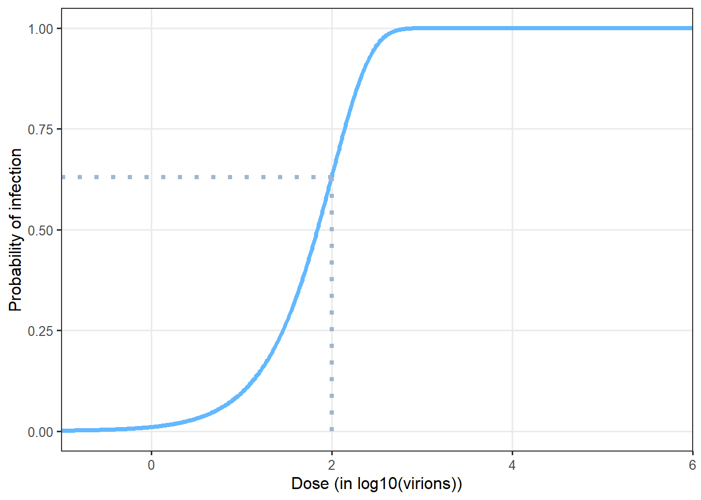

Model description
This model description is presented herein according to the Overview-Design-Details (ODD) protocol as recommended by Grimm et al. (2010) for ABM models.
1 Overview
- Purpose and patterns
The outline of the agent-based modelling workflow developed in this study is schematized in Figure 1. The developed model was aimed to simulate the transmission of the SARS-CoV-2 between different locations in multi-room meat processing plants and to provides, as simulation outputs, several indicators associated with the possible infection of the workers as well as the food and/or surfaces contamination.
- States variables and scales - Parameters overview
Several parameters were taken into account in the model. On the one hand, some parameters identified as relevant from the literature data/assumptions or preliminary laboratory experiments were included for better describing the characteristics of SARS-CoV-2. One can cite for example the attract rates or the symptoms development possibility depending on the different variants of concern (VoC). On the other hand, based on multiple industrial and epidemiological investigations, other parameters were included to describe the behavior of the model in different scenarios. These scenarios can be defined by varying the different extrinsic environmental parameters such as the plant dimensions, ventilation, etc. as well as the behaviors of the workers in the plant (mask wearing, distance between workers, etc.). Such scenario could be useful for evaluating potential effects of control measures on the transmission of the virus.
- Process overview and scheduling
The model was divided in four separate modules describing different agents evolving in the processing plant including (i) the workers, (ii) the droplets in the air, (iii) the inert surfaces and (iv) the food products, respectively. As schematized in Figure 1, different possible interactions between these agents were described, such as the transmission of the droplets probably containing viral particles between infectious workers and the air through their respiratory activities (exhalation and inhalation), the sedimentation of these droplets from the air onto inert surfaces and/or food portions as well as the transfers between surfaces and food, etc. Based on prior data or knowledge, spatiotemporal rules were defined to simulate the interactions between modules and the properties of every agents at successive time points distanced by a predefined short time step (minutes). These step-by-step simulations were performed afterwards for longer periods (days, weeks, etc.). At the end of these periods, balances were calculated for different properties of the agents, e.g. the total number of aerosolized or fallen droplets, the number of viral gene copies inhaled by each worker, etc. Based on these balances, several contamination indicators were estimated such as the total number of infected workers, the number of contaminated food portions and surfaces in the plant, etc. These estimated indicators could be compared with collected epidemiological data for further model validation purposes.
2 Design concept
2.1 Basic principles
The different agents integrated into the model for describing the functioning of the meat processing plant are illustrated in Figure 2. The model was implemented in the way that end-users can include by themselves as input data the different characteristics of the plant such as its dimensions, structures, objects, etc. For instance, as shown in Figure 2, the illustrated plant is made up of several rooms / spaces including an entry hall for workers, an office, a cooling area for food storage, a large area for meat cutting activities with two conveyor belts for food transfers and a packaging machine, etc. Different types of workers were considered in the model depending on their respective activities, including the cutters, the logistic workers as well as the ones with transverse activities. The number of workers of each type present in the plant and their respective working rhythm and timetable condition then the daily meat processing flow (meat quantity, processing duration) of the overall plant. This processing flow was described as successive transformation steps of the meat products: the carcasses/half-carcasses arriving in the plant through the gate are transported to the conveyors by logistic workers, become smaller meat portions after different cutting steps carried out by cutters around the conveyors and eventually packed and stored in the cooling area. Other workers with transverse activities such as manager, administrative or cleaning workers can also be present in the plant at different moments depending on their respective timetable. Based on the overall timetable of the plant, one can define rules for generating predefined or random movements of every agents (workers, carcasses, meat cuts…) between different locations in the plant at different time points. Determining these movements over time will allow then to track the possible transmission of the virus introduced by one or several infectious workers in the plant.

The transmission of the virus from one or several infectious workers to other susceptible workers, surfaces and food products are schematized in the Figure 3. In this study, the duration between the different successive infection phases were taken into account from new infection to recovery with/without symptoms development. The different infectious workers can exhale into the air, through their respiratory activities or symptoms such as breathing, talking, sneezing or coughing, different amounts of droplets containing or not viral particles due to variability between workers and depending on their behavior (mask wearing). These droplets of various sizes can be aerosolized and/or fall afterwards onto inert surfaces and food products depending on the characteristics of the ventilation system in each space of the plant. Some high-diameter droplets sent out by the infectious workers (e.g. in cases of sneezing or coughing) can also fall directly onto surfaces without being aerosolized and/or projected towards nearby workers. The total viral loads on different surfaces and/or food products (meat cuts) are also enumerated; they are considered as contaminated if the viral loads exceed a predefined threshold value. The non-infected workers (susceptible workers) can inhale more or less of droplets depending on their positions in the plant at different moments. The cumulative viral doses inhaled by each susceptible worker at the end of the day can then probably trigger an infection following a dose-response relationship. At last, in addition of these possible infections inside the plant, the model included also other contamination sources outside the plant: the susceptible workers can get infected due to the outside epidemic situation and or by community activities such as co-living with infectious workers.

2.2 Prediction
Three classes of output indicators can be provided the simulations, including (i) indicators associated with contamination of the workers (e.g. the cumulative number of infected workers over a given period, the number of symptomatic workers at a given time point, etc.); (ii) indicators associated with the surfaces contamination (e.g. the frequency of reaching a predefined contamination level for a given surface, differences between surfaces in the multi-room plants, etc.) and (iii) indicators associated with the food contamination (e.g. proportion of food products reaching a predefined contamination level, food production loss percentage due to absence of infected workers, etc.). These indicators can be compared afterwards with epidemiological data collected from investigations and/or with other literature data for further potential validation purposes.
2.3 Stochasticity
The stochasticity of this model was mainly formalized by using the different input probability distribution and proportion parameters. Such parameters provided then, from one simulation to another, the different possible configurations and output results. One can cite for example the inter-simulations differences on the symptoms onset for the different infectious workers giving a symptoms development probability, the number of cutters by giving a total number and the corresponding cutters proportion, etc. Thus, in this project, for each set of input parameters of the model, a large number of simulations was necessary, providing then output indicators with their respective point estimates as well as their distributions (credibility interval). The needed number of simulations was estimated using a convergence check process.
3 Details
3.1 Food processing plant
3.1.1 Structures
The structure of the multi-room food processing plant can be included as inputs of the model. Based on industrial investigations / interviews, seven principal rooms (spaces) were included herein as an example to define the plant structure, including the Cutting room (the main space of the plant), Entry hall (for workers), Arrival gate (for food arrival into the cutting room), Cooling area (for food storage), Waste area, W.C., and Office (illustration in Figure 2).
The different characteristics of each room are included as inputs of the model:
- dimensions of the plant and dimensions of the different rooms, expressed in \(m\) (the length and width on two axes, denoted X and Y axes, respectively, and height on a 3rd axis, denoted Z axis);
- positions of the room in the plant;
- presence and relative positions of internal/external door for each room;
- ventilation specifications: several air conditioning types can be indicated such as Controlled Mechanical Ventilation (CMV), Direct Expansion Coil (DEC) or Air Handing Unit (AHU).
The above characteristics were defined in the model as model parameters based on industrial investigations or previous works. For example, each room needs to be positioned on the entire workshop grid using a numerical value between 0 and 1 indicating the relative position over the axes. The cutting room is the main build by subtracting all other rooms. The position of the internal and external doors can also be mentioned using the predefined values top, bottom, left or right.
3.1.2 Objects
The different objects or equipment can be included inside the plant such as conveyors, peeler, etc. In the same ways as for the different rooms, their dimensions and their relative position alongside the X and Y axes are included as model inputs. As illustrated in Figure 2, two types of objects were included : two conveyor belts allowing to transport the different carcasses or food portions from one point to another and an equipment that can be shared by several operators (e.g.: a peeler, frequently used in meat cutting plant). Some parameters values characterizing these objects are illustrated in Table 1.
| Parameters | Object type | Length (X) | Width (Y) | Relative X-position | Relative Y-position |
|---|---|---|---|---|---|
| cvy | Conveyor | 13 | 3 | 0.2 | 0.5 |
| cvy2 | Conveyor | 18 | 3 | 0.5 | 0.5 |
| epm1 | Equipment | 2 | 2 | 0.85 | 0.7 |
3.2 Workers
3.2.1 Type of workers
Different principal types of workers were taken into account in the model depending on the their daily tasks inside the plant. According to industrial investigations and expert knowledge, six types of workers were included as following (Figure 2):
- logistic1 : the workers in charge of bringing carcasses (or half-carcasses), arriving in the cutting room through the arrival gate, to the begin of the conveyor for cutting.
- cutter1 : positioned around the first section of the conveyor, denoted conveyor1, in charge of deboning, trimming and cutting carcasses into large pieces;
- cutter2 : workers in charge of cutting larges pieces from cutter1 into smaller food portions;
- logistic2 : the workers in charge of transferring food portions from the cutting tables to the packaging or supplementary treatment equipment and storing packed products in the cooling area;
- transverse1: administrative workers such as manager, chief or maintenance staff who mainly stay out of the cutting room during the work day;
- transverse2: workers from the cleaning team.
The total number of employees is defined as shown in Table 2.
| Parameters | Unit | Value | Uncertainty range | References |
|---|---|---|---|---|
| Total number of workers | number of workers | 100 | input | [interviews] |
| Number of temporary workers | number of workers | 15 | [1-4] | [interviews] |
| Proportion of cutters 1 | ratio (0 to 1) | 0.36 | [5-11] | Mallet et al. (2021) |
| Proportion of cutters 2 | ratio (0 to 1) | 0.47 | [5-11] | Mallet et al. (2021) |
| Proportion of logistic workers 1 | ratio (0 to 1) | 0.04 | NA | Gunther et al. (2020) |
| Proportion of logistic workers 2 | ratio (0 to 1) | 0.04 | NA | Gunther et al. (2020) |
| Proportion of transverse workers 1 | ratio (0 to 1) | 0.045 | [0.18-0.475] | Mallet et al. (2021) |
| Proportion of transverse workers 2 | ratio (0 to 1) | 0.045 | NA | Mallet et al. (2021) |
The workers were split afterwards into two teams, denoted “team A” and “team B” according to their working shift (morning or afternoon) and to their weekly schedule. In the model, this team dividing was included by the parameters \(p_{Team}\) (value between 0 and 1 representing the proportion of each team) and set by default at \(p_{Team}=0.5\) (equal distribution between the two teams A and B). In each team, the types of workers (cutters, transverse and logistic workers) were proportionally distributed as described above. The two teams A and B alternatively change their shift (morning/afternoon) from one week to another. Finally, the workerschange the team (between the teams A and B) from one week to another using a probability defined as model parameter, denoted \(p_{changeTeam}\), (value between 0 and 1), arbitrarily set at \(p_{changeTeam} = 0.05\).
3.2.2 Working days and schedule
Based on several industrial investigations and French legislation relative to working conditions, a typical working schedule was implemented in the model in order to describe the timetable for the different types of workers during the consecutive working days of a given week and over several consecutive weeks.
Then, for a given working day:
From 12:00 AM to 5:00 AM: No present worker in the processing plant;
At 5:00 AM: Arrival of the workers from the “morning team” in the entry hall (for preparation, equipment change, etc.) including cutter1, cutter2, logistic1 and logistic2 workers (cf. section Section 3.2.1);
From 5:00 AM to 1:00 PM: Presence of the “morning team” workers in the multi-room processing plant, with their respective precise locations in the plants varying according to their respective workplaces (Figure 2):
logistic1: randomly switching locations during this period between the arrival gate and the area near the starting point of the first conveyor belt (transport of raw carcasses for deboning and first primary cuts),
cutter1 workers: staying at fixed locations called cutting workplaces, randomly attributed around the first conveyor belt (different from one day to another), while keeping approximately equal distances between them (carcasses deboning and primary cuts),
cutter2 workers: staying at fixed cutting workplaces around the second conveyor belt, attributed randomly as for cutter1 workers (final meat processes / cuts),
logistic2 workers: randomly switching locations between the endpoint of the second conveyor belt, the area around the packaging equipment and the cooling area (transport, packaging and storage of the final products);
From 9:00 AM to 5:00 PM: Presence of transverse1 workers in the processing plant. During this period, one considered these workers (administrative, manager):
entering the processing plant by passing through then entry hall as for the morning team at 9:00 AM,
staying in the processing plant, for the most the time, at the office area (administrative task),
absent from the plant between 12:00 PM and 12:45 PM (lunch break outside of the plant),
if present (before and after lunch break), moving randomly three times in the cutting room for short stays of 5 minutes (processing check) near the other cutting or logistic workers,
quitting the plant by passing through the entry hall at 5:00 PM;
At around 1:00 PM: switching shift between the morning and the afternoon team, when the morning one quits the processing plant through the entry hall and the afternoon and the afternoon one enters the plant by crossing the same entry hall locations;
From 1:00 PM to 9:00 PM: Presence of the workers of the afternoon team in the plant, with activities and locations attributed as for the workers of the morning team;
At around 9:00 PM: End of the daily cutting process:
the workers from the afternoon team quits the cutting room by passing through the entry hall,
arrival of the transverse2 workers in the plant also through the entry hall;
From 9:00 PM to 12:AM: Daily cleaning activities by the transverse2 workers:
moving randomly between different locations of the multi-room processing plants (overall cleaning activities),
quitting the processing plant by passing through the entry hall;
12:00 AM: end of the working day;
Over the working day, whatever the type of workers, each individual worker moves to the W.C. at two random moments during their presence in the plant, for short stays of 5 minutes.
The daily schedule described above was then applied for every working days, thus from Monday to Friday. No activity was implemented for the two resting days, i.e. Saturday and Sunday. This weekly schedule was afterwards repeated for the several consecutive weeks. Based on French legislation relative to working conditions, this inter-weeks scheduling was implemented in the way that the number of present workers, called active workers, represented around 80% of the overall total number of workers of the firm. In other words, every single worker has legally a one-week holiday every six consecutive weeks approximately, while ensuring the sufficient number of daily active workers as well as the necessary daily composition of the different teams in order to properly run the ordinary cutting process (cf. section Section 3.2.1). A simulated schedule example for 100 workers during 4 consecutive weeks is illustrated in Figure 4 (day 1 to 28), with a focus on the detailed composition of the teams at the day 9.
3.2.3 Infection phases
The duration of different infections phases were taken into account in the model and are schematized in Figure 5. The uncertainty ranges of the different values have been identified for sensitivity analysis of the hypothesis of the model (Table 3).
Once infected, individuals enter firstly into a presymptomatic phase including (i) a latent period during which no virus can be detected and (ii) individuals become infectious before symptom onset (Lau and Leung 2020). The duration of the latent period has been estimated to 3.3 days with 95% CI [0.2-7.9] (Zhao et al. 2021). The infectious period of the presymtomatic period has a length duration of 2 days (with an uncertainty range between 1 and 4 days) (Byrne et al. 2020). Considering the data available for the delta VoC (Kang et al. 2021; Grant et al. 2021), the presymptomatic period duration was considered to be equivalent for every VoCs. At the end of the presymptomatic period, a proportion of the individual will develop symptoms. Several studies are available for estimating this proportion (J. He et al. 2021; Alene et al. 2021; Ma et al. 2021; Sah et al. 2021). Alene et al. (2021) estimated the pooled proportion of asymptomatic COVID-19 cases throughout the course of infection was 25% (with 95%CI: 16%-38%). Ma et al. (2021) estimated that the pooled percentage of asymptomatic infections among the confirmed population was 40.50% (with 95%CI: 33.50%-47.50%). Sah et al. (2021) estimated that percentage at 35.1% (with 95% CI: 30.7-39.9%). In our study, the mean of these three percentages has been used as model parameter, pAsymptom, i.e. 33.5%. The range of possible values was also derived from the 95%CI of these studies and set between 16% and 47.5% in our study.
For the sub-population who develops symptoms, the duration of their symptomatic period has been found uncertain according to studies (Byrne et al. 2020). The duration of the different symptoms differ according to their nature (Santos et al. 2021). From the onset of symptoms to recovery, a period of 13 days can be considered with an uncertainty range comprise between 11 and 16 days (Byrne et al. 2020). During that period, virus can be detected but it as estimated that infectiousness becomes usually low after 7 days (X. He et al. 2020). The uncertainty range for the infectiousness period can be estimated from Byrne et al. (2020). They stated that virus detection overestimates the infectious period on average by 2-6 days. Kampen et al. (2021) provide another estimation of the uncertainty range of infectiousness period. They considered the duration between 5 and 11 days. The value of 8 days (Kampen et al. 2021) was used in the model .
| Parameters | Unit | Value | Uncertainty range | References |
|---|---|---|---|---|
| Latent phase of presymptomatic period | day | 3 | [0-8] | Zhao et al. (2021) |
| Infectious phase of presymtomatic period | day | 2 | [1-4] | Byrne et al. (2020) |
| Total duration of the presymtomatic period | day | 5 | ||
| Infectious phase after presymptomatic period for symptomatic people | day | 8 | [5-11] | Byrne et al. (2020), Kampen et al. (2021) |
| Infectious phase after presymptomatic period for asymptomatic people | day | 8 | [5-11] | Byrne et al. (2020) |
| Non-infectious period for symptomatic people | day | 4 | ||
| Non-infectious period for asymptomatic people | day | 4 | ||
| Proportion of asymptomatic | # | 0.335 | [0.18-0.475] | Alene et al. (2021), Ma et al. (2021), Sah et al. (2021) |
3.2.4 Individual variability
Among the infection phases described previously, the model considered the viral load emitted by the different workers only during their infectiousness period. Viral loads were considered to be similar between asymptomatic and symptomatic persons according to a study of Walsh et al. (2020) and assumed to be constant during the whole infectiousness period. The inter-individual variability of virus load in sputum and the VoC was taken into account in the ABM model: parameters characterizing this variability were estimated by fitting triangular probability distributions on literature (Jones et al. 2021; Teyssou et al. 2021; Luo et al. 2021; Wang et al. 2021) (see Appendices… ). Estimated values of these parameters are gathered in Table 4.
| VoC | Min | Mode | Max | Shift compared to delta | Reference |
|---|---|---|---|---|---|
| delta | 1.6 | 8.6 | 10.4 | reference | Jones et al. (2021) |
| original | 0.6 | 7.6 | 9.4 | -1 | Teyssou et al. (2021) |
| alpha | 1.1 | 8.1 | 9.9 | -0.5 | Luo et al. (2021); Wang et al. (2021); Teyssou et al. (2021) |
| omicron | 1.6 | 8.6 | 10.4 | 0 | Lyngse et al. (2021) |
3.2.5 Secondary attack rate
The secondary attack rate (SAR) parameter used to estimate the probability of contraction SARS-CoV-2 for the workers having community activities outside the plant such as co-living. The SAR of the original and alpha VoCs has been found by Fung et al. (2021) to be equal to 17.1% (95%CI 13-21%). According to Singanayagam et al. (2021), the SAR was found to be 38% for delta variant (with 95%CI 24-53%) in case of unvaccinated people, and 25% (with 95%CI 18-33%) for vaccinated people. The SAR for omicron is respectively 1.2 for vaccinated and 2.6 times more important than for delta (Lyngse et al. 2021). These different SAR parameter values included in the model are shown in Table 5).
| VoC | Unvaccinated | Vaccinated | Multiplication factor toward a reference | Reference |
|---|---|---|---|---|
| original | 17% [14%-21%] | NA | NA | Fung et al. (2021) |
| alpha | 17% [14%-21%] | NA | NA | Fung et al. (2021) |
| delta | 38% [24%-53%] | 25% [18%-33%] | NA | Singanayagam et al. (2021) |
| omicron | 57% | 37.50% | 1.5 more than delta | Lyngse et al. (2021) |
3.2.6 Infection probability
The possible triggering of the first infection phase for each worker was modeled using a dose-response modelling approach, considering the viral quantity inhaled by each one. Among different dose-response models proposed in the literature (see more details in the section Section 4.2 ), the Watanabe model (Watanabe et al. 2010) was chosen herein to describe, for each worker, the probability to get infected as function of the number of inhaled virions (infectious virus), denoted $dose$, as follows:
\[ P(infection) = 1 - \exp(-r * dose) \]
where \(r\) is the shape parameter defining the exponential form of the no-threshold model is a no-threshold model. The value of $r$, estimated at \(r=0.00246\) [95%CI 0.00128-0.00527] based on literature data (cf. section Section 4.2) was used herein in the ABM model. It is also worth noting that the concentration of SARS-CoV-2 expressed in gene copies (e.g. RNA copies) or in infectious virus are strongly different. Important ratios between these concentrations have been suggested in the literature, varying from a factor of 100 to 1000 between the number of genes copies and the infectious viral particles (Miller et al. 2021; Pitol and Julian 2021). This factor, denoted \(f_{RNA/virion}\), was included in the ABM model with a arbitrarily chosen value of 500 as well as the 95%CI between 100 and 1000.
3.2.7 Absences
Once infected, individuals enter to the different infection phases as described in the section Section 3.2.3. At the end of the infectious pre-symptomatic phase, an infectious worker can probably develops symptoms, with a probability parameter denoted \(p_{symp}\) (cf. section Section 3.2.3 and Figure 5). In this model, other absence and possible internal reorganization rules were also taken into account (see Figure 6).
As illustrated in Figure 6, after the pre-symptomatic period, if an infectious worker develops symptoms, this worker has an important probability to be absent from work. This probability, denoted \(p_{absence-symp}\), was estimated at 0.83, based on data collected by Mallet et al. (2021). If absent, the considered worker was out from the plant during a pre-defined absence duration fixed by national authorities depending on the pandemic period. In this project, this duration was fixed at 10 days (French legislation, SPF, DGS-Urgent-2021-20) and applied for every type of workers. If there is not any worker for one or several types of workers (e.g. logistic) at a given day due to multiple absences, the model simulated possible switches between workers from one team/type to another in order to try maintaining regular activities of the firm with at least one worker for each team/type of workers. This condition was daily checked: if it is not filled due important infection clusters, the given day was considered at critical and the whole plant was shut down with no activity.
3.3 Air
3.3.1 Exhalation
The initial source of SARS-CoV-2 was considered through different respiratory activities of the infectious workers emitting droplets of various sizes. The number of droplets (expressed as \(s^{-1}\) ) (containing or not viral particles) emitted over time was modeled as follows :
\[ \dot N_{exh, d} = \dot Q\upsilon_{exh} * C_d * (1-eff_m), \]
where \(\dot Q\upsilon_{exh}\) (\(m^3.h^{-1}\)) corresponds to the exhaled volumetric air flow rate, \(C_d\) (\(\#.m^{-3}\) ) is the viral concentration of droplets of diameter \(d\) and \(eff_m\) corresponds to the efficacy of the mask if correctly worn (otherwise, \(eff_m = 0\)). The correct mask wearing was described using a parameter called the mask acceptability, denoted \(p_{mask}\), corresponding to the proportion of the workers constantly wearing a mask during their working day. Several types of mask can be included as input of the model such as surgical mask or FFP2, with their respective efficacy and acceptability.
The volumetric airflow rate was assumed to vary between the different workers depending on their physiology and the intensity of their activities. Based on data obtained by Buonanno, Morawska, and Stabile (2020), the ABM model considered six size classes for the droplets with the midpoint diameters \(d\) at 0.8, 1.8, 3.5, 5.5, 20 and 100 \(\mu m\), respectively. Several respiratory activities (events) were taken into account in the model, including breathing, talking, talking loud (based on study by Morawska et al. (2009)), coughing and sneezing (SARS-CoV-2 symptoms). In this study, based on estimations from literature data, we assumed that each droplet contained one viral RNA copy. The droplet concentrations \(C_d\) associated with each droplet class emitted during each respiratory activity (event) estimated from studies by Morawska et al. (2009), Kennedy, Lee, and Epstein (2021) and P. (1946) are gathered in Table 6.
| Respiratory activity | \(d = 0.8 \mu m\) | \(d = 1.8 \mu m\) | \(d = 3.5 \mu m\) | \(d = 5.5 \mu m\) | \(d = 20 \mu m\) | \(d = 100 \mu m\) |
|---|---|---|---|---|---|---|
| breathing | \(0.084 * 10^6\) | \(0.009 * 10^6\) | \(0.003 * 10^6\) | \(0.002 * 10^6\) | \(0\) | \(0\) |
| talking | \(0.236 * 10^6\) | \(0.068 * 10^6\) | \(0.007 * 10^6\) | \(0.011 * 10^6\) | \(0\) | \(0\) |
| talking loud | \(0.751 * 10^6\) | \(0.139 * 10^6\) | \(0.139 * 10^6\) | \(0.059 * 10^6\) | \(0\) | \(0\) |
| coughing | \(0\) | \(0.025 * 10^6\) | \(0.145 * 10^6\) | \(0.48 * 10^6\) | \(2.51 * 10^6\) | \(6.65 * 10^6\) |
| sneezing | \(0\) | \(13 * 10^6\) | \(80 * 10^6\) | \(175 * 10^6\) | \(230 * 10^6\) | \(489 * 10^6\) |
The occurrence frequency of the above respiratory activities during a time step varied from one worker to another, depending on their working activities as well as their infection phases. For example, Birring et al. (2006) and Hsu et aL. (1994) suggested average coughing frequencies at 2 coughs per hour for healthy patients and 47 coughs per hour for symptomatic patients. Such variability between infection statuses was also suggested for the sneezing frequencies ([Hansen & Mygind, 2002; Musch et al. 2021). These SARS-CoV-2 symptoms frequencies \(f_{cough/sneeze}\) (expressed in \(\#.min^{-1}\)) included in the model are gathered in Table 7.
| Symptoms | Infectious presymptomatic | Asymptomatic | Symptomatic |
|---|---|---|---|
| coughing | 0.003 | 0.033 | 0.783 |
| sneezing | 0.002 | 0.08 | 0.017 |
Based on the frequencies below, during a given several-minute time step \(dt\), the probability to have a coughing/sneezing event for a worker was calculated by \(p_{cough/sneeze} = f_{cough/sneeze} * dt\). If no symptoms are observed during this time step, the worker was considered to have one of the three remaining respiratory activities, i.e. breathing, talking or talking loud, with supposedly equal probability.
3.3.2 Aerosolization criteria
The different droplets emitted by the workers can be aerosolized (suspended in the air) (Bazant and Bush 2021) or fall directly onto the nearby environments (including nearby workers, inert surfaces or food products) depending on the size of the droplets and the ventilation system in the room. In this study, a criterion was used to determine if in a given room \(r\) a droplet of diameter \(D_d\) (size class \(d\)) will be aerosolized by comparing its sedimentation time, denoted \(t_{sed,r,d}\), with the circulation time of the airflow in the room, denoted \(t_{circ,r}\).
On the one hand, assuming that all droplets were uniformly distributed in the air, their sedimentation time was calculated as follows:
\[ t_{sed,r,d}= \frac{H_r}{\upsilon_{sed,d}}, \]
with \(H_r\) (in \(m\)) corresponds to the height of the room and \(\upsilon_{sed,d}\) (in \(m.s^{-1}\)) is the settling velocity of the droplets. The velocity was calculated using the Stokes law:
\[ \upsilon_{sed,d} = \frac{g*(\rho_{water}-\rho_{air})*D_d^2}{18*\mu}, \]
where \(g\) (in \(m.s^{-2}\)) is the gravity acceleration; \(\rho_{water}\) and \(\rho_{air}\) (in \(kg.m^{-3}\)) are the mass density of the droplets and the air, respectively and \(\mu\) is the dynamic viscosity (\(kg.m^{-1}.s^{-1}\)).
On the other hand, the circulation time of the airflow in the room \(r\) was calculated as the ratio between the volume of the room \(V_r\) (\(m^3\)) and the volumetric airflow rate \(\dot Q\upsilon_r\) (\(m^3.h^{-1}\)):
\[ t_{circ,r} = \frac{V_r}{\dot Q \upsilon_r}, \]
with the value of \(\dot Q \upsilon_r\) depending on the user-defined ventilation characteristics of the room. This airflow rate was equivalent to (i) the air mixing rate for Air Handing Unit and Direct Expansion Coil systems or (ii) the renew airflow rate for Controlled Mechanical Ventilation (CMV) systems. Droplets of diameter \(D_d\) in the room \(r\) were then considered as aerosolized under the following if:
\[ t_{sed,r,d} > 10 * t_{circ,r}, \]
otherwise, they were considered as sedimented onto nearby environments. The total number of droplets sedimented in the room was then calculated as follows:
\[ \dot N_{sed,d,r} =\upsilon_{sed,d} * S_r, \]
with \(S_r\) (in \(m^2\)) corresponding to the area of the room.
3.3.3 Falling & projection
As previously mentioned, the droplets of various sizes were considered in the model from emission by infectious workers through their respiratory activities (breathing, talking, etc.). Besides aerosolized or sedimented droplets after a given time step described above, one also considered a fraction of the emitted droplets (mostly the ones with high-diameters) that could possibly fall directly onto nearby environments and/or in the direction of nearby workers following coughing/sneezing events. These events, when they occurs (cf. frequencies in Table 7), gave then three different paths for the circulation of the droplets emitted by an infectious worker, including (i) a fraction going to the aerosol and sedimented afterwards as described in the previous sections, (ii) a variable fraction projected in the direction of nearby susceptible workers depending on the distance between them and the infectious one and (iii) a variable fraction fallen / dropped directly on nearby environments (Figure 7).

In this study, for simplification purposes, the spatial environments in the plant were divided into one-square-meter tiles where different agents (workers, inert surfaces or food products) can be present at a same given time. The fractions of falling / projected droplets (paths ii and iii) were spatially distributed afterwards into sub-fractions for the nearby square tiles depending on the distances separating them and the infectious worker. These spatial distributions were estimated based on data obtained previously by P. (1946) and Nicas, Nazaroff, and Hubbard (2005) and shown in Figure 7.
3.3.4 Inhalation
The total number of droplets (containing viral RNA copies) inhaled by each worker (by breathing in small droplets from the air or by being exposed to direct droplets projections) was tracked for each time point. The total exposure to the virus of each worker was calculated as the cumulative number of RNA copies inhaled at the end of the day. This exposure, converted afterwards as a number of infectious virions using the conversion factor \(f_{RNA/virion}\), was included in the dose-modelling step to determine if a possible infection may occur.
3.4 Surfaces
As previously described, droplets can sediment or fall onto different areas that were divided into one-square-meter tiles. In the study, all inert surfaces (e.g. surfaces of the conveyor belts and the equipment) located on those tiles were considered as agents of the ABM model with their own spatial coordinates. During the working day, the quantity of contaminated droplets could be accumulated and probably transferred from or to aerosol or food portions present on these inert surfaces. These droplet accumulations were calculated at the end of the day to determine the contamination level of each inert surface tiles, expressed as the total number of viral RNA copies per \(m^2\). Considering a possible factor between this total of RNA copies and the estimated quantity of virions as well as an experimental limit of detection, a surface tile was considered as contaminated by infectious viruses (positive contamination) if its droplet accumulation exceeded a predefined threshold values. In this study, the contamination was computed for several threshold levels varying from 3 to 9 \(\log_{10}\) viral RNA copies in order to deal with possible uncertainties in the RNA/virions factor and the limit of detection. At the end of the day, once the total number of contaminated surfaces as well as their corresponding spatial coordinates were determined, all droplet accumulations were reset at 0 since all inert surfaces were assumed to be daily cleaned by the transverse2 workers.
3.5 Food
3.5.1 Cutting process
The meat cutting process was described herein accordingly to the module Workers (cf. Section 3.2.1) as a multi-step process from the arrival gate to the storage area. The agents food portions were computed with a flexible flow:
Firstly, two principal input parameters were used to describe the quantity of processed meats depending on the type of meat processed in the plant (e.g. porcine, bovine, etc.), including (i) the average weight of the carcasses arriving at the begin of the cutting process and (ii) the net weight ratio describing the yield obtained at the end of the process by excluding other non-consumable parts of the carcasses;
After all cutting steps, the final food portions could be various sizes and weights depending on the market/consumers demand. For simplification purposes, an agent food portion was defined as a portion with a given consumer sales unit (CSU), i.e. the average weight of the final portion (expressed in \(kg\)) obtained at the end of the cutting process;
Based on expert knowledge and interviews with industrial factories, the quantity of meat processed during a period was assumed to the depend to the working rhythm of each worker type (logistic, cutter1, cutter2, etc.). These rhythms were included as parameters, for each type of meat and type of workers, expressed at a ratio corresponding to the expected weight proportion of the carcass processed during a given period. For example, the working rhythm of the cutter1 workers in a porcine processing plant equal to 0.2 \(min^{-1}\) correspond to their capacity to cut 20% of a pork carcass during one minute into different portions ready to go to the subsequent processing steps;
The working rhythm can be different from one worker category to another, therefore, different food portions can be accumulated over time on the same working surfaces (conveyor belts or equipment). This accumulation will condition then the duration of every meat portions spatially distributed in the plant during the different cutting steps: for example, several meat portions can stay 5 minutes in the first cutting step (deboning) but 10 minutes in the second one (slicing, chopping, etc.) requiring more time to be done;
Knowing the above duration for each cutting step, the different food portionswere spatially distributed at different step-dependent locations in the plant (e.g. cutting1-conveyor1-5minutes). It is worth noting that locations such as the conveyor belts may represent several spatial X-Y coordinates depending on their dimensions. The spatial distribution of the meat portions on the conveyors was computed in the way that the different portions from the same carcass were at the same location during a given period but could possibly have different random coordinates (simplification purposes for modeling the movement of the conveyor belts);
Finally, depending the total number of workers present in the plant at a given working day, the total number of agents food portions as well as their spatiotemporal distributions were accordingly computed.
As for the inert surfaces (cf. Section 3.4), the contamination of the meat products was considered if the viral RNA accumulation in each portion (through sedimentation, projection or transfers by contact) exceeds pre-defined threshold levels. This accumulation was calculated for each portion at the entry of storage area (end of cutting process). Based on the chosen threshold level, the contamination percentage was calculated at the end of each day as the ratio of the number of contaminated portions over the total number of processed ones during the considered day.
3.5.2 Transfers by contact
As described in Section 3.3.3, contaminated droplets can be accumulated after sedimentation/projection on different areas where inert surfaces and food portions are located at a given time, suggesting then possible droplet transfers by contact between them. These transfers are schematized in Figure 8.

Considering a quantity \(N_t\) of RNA copies contaminated by sedimentation/project onto the a given one-square-meter tile at the time \(t\):
the model computed firstly a fraction \(prop_{inert}\) of \(N_t\) accumulated directly on the corresponding inert surface. The remaining droplets \((1-prop_{inert}) * N_t\) were distributed equally on \(N_{FP_{expo}}\) random food portions present on the surface while assuming that the remaining portions were not exposed to droplets at this time point \(t\) in reason of the vertical stacking of the pieces.
Afterwards, from the time \(t\) to \(t+1\):
the droplets present on the inert surface the time \(t\) were partially transferred (transfer rate \(T_{surfaces-food}\)) to \(N_{FP_{expo}}\) random meat portions present on the surface at the time \(t+1\) due to direct contact with equal droplets distribution on each portions;
a fraction of \(T_{food-surfaces}\) of the droplets were transferred from the exposed food portions at the time \(t\) to their respective inert surface on which there were located at the time \(t+1\);
as for the time \(t\), possible additional contamination from sedimentation/projection was computed for the time \(t+1\) on the inert surface and exposed food portions.
The contamination balances were calculated for all inert surfaces and food portions at different time points. As previously described, the contamination of the surfaces and food portions were determined at the end of the day or at the begin of the food storage.
4 Appendices
4.2 Dose-response model parameters
Dose-response modelling is the process of using mathematical relationships to describe the probability of an adverse health effect (e.g., infection, illness) occurring in an individual or the frequency of an adverse health effect in a population when that individual or population is exposed to a specific dose of pathogenic microorganisms. Two types of modelling approaches can be distinguished (Haas 2002). In the first, it is considered that there is a cooperation between ingested/inhaled microorganisms, involving the notion of minimum infective dose: the infection is the result of the combined action of multiple micro-organism units, and it becomes possible only if the dose exceeds a threshold (the so-called “minimal infective dose”). In the second approach it is assumed on an independence of action of microorganism units. Each microorganism unit has a non-zero chance of causing infection on its own. For SARS-CoV-2, as for other infectious pathogens, the models currently used are based on the single hit model theory and the absence of a threshold (Poydenot et al. 2021).
- Exponential dose response model
The exponential model is a no-threshold model, where the probability of infection (r) for a virion particle is constant, and the number of virions inhaled is not perfectly known but assumed to follow a Poisson distribution of parameter d . The hypothesis of the constancy of r means that the result of the interaction between host, microorganism and environmental factors does not vary much between exposed individuals. The Poisson distribution is applicable in case the contamination is considered homogeneous. This assumption appears suitable for characterizing droplet distribution in the air. The probability of being infected following the inhalation of air in which the average contamination is equal to d is expressed as follows:
\[P(\mathrm{infection}|d)=1-\exp(-r/d)\]
Figure 10 shows some examples of the exponential dose-response curves depending on different values of \(r\).
- Wells-Riley model
The Wells-Riley model, as illustrated in can also be used to calculate the probability of infection based on given dose (Wells et al. 1955; Sze To and Chao 2010). It also relies on the hypothesis of a random distribution of the pathogen in the air. But it uses another parametrization compared to the exponential dose-response model. The quantum of infection q is used. q corresponds to a quantity of inhaled virions for which the probability of infection in the population is 63%.
\[P(\mathrm{infection}|d)=1-\exp(-d/q)\]

- Comparison of models
No data have been used so far for fitting an exponential dose response curve for Sars-Cov2 (Parhizkar et al. 2021). However prior work has shown that dose-responses for other coronaviruses (Watanabe et al. 2010; Haas 2021). This dose-response has been used in several risk assessment for Sars-Cov2 (e.g. Pitol and Julian 2021).
Prentiss, Chu, and Berggren (2020) provided some estimates of q values based on estimation of exposure and observed attack rates. Six values were obtained from 6 six different situations were the attack rates. The values ranged from 322 to 3012. Augenbraun et al. (2020) assumed a conservative value of q equal to 100.
Figure 12 compares the exponential dose response derived from Watanabe et al. (2010) and available in QMRAwiki and the values derived from Prentiss, Chu, and Berggren (2020).

The Watanabe’s model provided a conservative estimate of the infection probability. The best fit value for \(r = 0.00246\) was used in the SACADA_ABM model. The 95% CI are used in the sensitivity analysis of the model (0.00128 and 0.00527).
- Expression of dose to assess probability of infection
Evidence suggests that the concentration of SARS-Cov2 expressed in gene copies or in infectious virus are strongly different. Different ratios have been proposed to account of this difference. Infective virus are though to be from 100 to 1000 lower than gene copies (Miller et al. 2021; Pitol and Julian 2021). The value of 500 is used in SACADA_ABM. The values of 100 to 1000 will be used in the sensitivity analysis.
References
Alene, Muluneh, Leltework Yismaw, Moges Agazhe Assemie, Daniel Bekele Ketema, Belayneh Mengist, Bekalu Kassie, and Tilahun Yemanu Birhan. 2021. “Magnitude of Asymptomatic COVID-19 Cases Throughout the Course of Infection: A Systematic Review and Meta-Analysis.” PloS One 16 (3): e0249090.
Augenbraun, Benjamin L, Zack D Lasner, Debayan Mitra, Sridhar Prabhu, Shivam Raval, Hiromitsu Sawaoka, and John M Doyle. 2020. “Assessment and Mitigation of Aerosol Airborne SARS-CoV-2 Transmission in Laboratory and Office Environments.” Journal of Occupational and Environmental Hygiene 17 (10): 447–56.
Bazant, Martin Z., and John W. M. Bush. 2021. “A Guideline to Limit Indoor Airborne Transmission of COVID-19.” Proceedings of the National Academy of Sciences 118 (17): e2018995118. https://doi.org/10.1073/pnas.2018995118.
Buonanno, G., L. Morawska, and L. Stabile. 2020. “Quantitative Assessment of the Risk of Airborne Transmission of SARS-CoV-2 Infection: Prospective and Retrospective Applications.” Journal Article. Environ Int 145: 106112. https://doi.org/10.1016/j.envint.2020.106112.
Byrne, Andrew William, David McEvoy, Aine B Collins, Kevin Hunt, Miriam Casey, Ann Barber, Francis Butler, et al. 2020. “Inferred Duration of Infectious Period of SARS-CoV-2: Rapid Scoping Review and Analysis of Available Evidence for Asymptomatic and Symptomatic COVID-19 Cases.” BMJ Open 10 (8): e039856.
Fung, Hannah F, Leonardo Martinez, Fernando Alarid-Escudero, Joshua A Salomon, David M Studdert, Jason R Andrews, Jeremy D Goldhaber-Fiebert, and Stanford-CIDE Coronavirus Simulation Model (SC-COSMO) Modeling Group Chin Elizabeth T Claypool Anneke L Fernandez Mariana Gracia Valeria Luviano Andrea Rosales Regina Isabel Medina Reitsma Marissa Ryckman Theresa. 2021. “The Household Secondary Attack Rate of Severe Acute Respiratory Syndrome Coronavirus 2 (SARS-CoV-2): A Rapid Review.” Clinical Infectious Diseases 73 (Supplement_2): S138–45.
Grant, Rebecca, Tiffany Charmet, Laura Schaeffer, Simon Galmiche, Yoann Madec, Cassandre Von Platen, Olivia Chény, et al. 2021. “Impact of SARS-CoV-2 Delta Variant on Incubation, Transmission Settings and Vaccine Effectiveness: Results from a Nationwide Case-Control Study in France.” The Lancet Regional Health - Europe, 100278. https://doi.org/10.1016/j.lanepe.2021.100278.
Grimm, Volker, Uta Berger, Donald L. DeAngelis, J. Gary Polhill, Jarl Giske, and Steven F. Railsback. 2010. “The ODD protocol: A review and first update.” Ecological Modelling 221 (23): 2760–68. https://doi.org/10.1016/j.ecolmodel.2010.08.019.
Gunther, T., M. Czech-Sioli, D. Indenbirken, A. Robitaille, P. Tenhaken, M. Exner, M. Ottinger, N. Fischer, A. Grundhoff, and M. M. Brinkmann. 2020. “SARS-CoV-2 Outbreak Investigation in a German Meat Processing Plant.” Journal Article. EMBO Mol Med 12 (12): e13296. https://doi.org/10.15252/emmm.202013296.
Haas, Charles N. 2002. “Conditional Dose-Response Relationships for Microorganisms: Development and Application.” Risk Analysis 22 (3): 455–63.
———. 2021. “Action Levels for SARS-CoV-2 in Air: Preliminary Approach.” Risk Analysis 41 (5): 705–9.
He, Jingjing, Yifei Guo, Richeng Mao, and Jiming Zhang. 2021. “Proportion of Asymptomatic Coronavirus Disease 2019: A Systematic Review and Meta-Analysis.” Journal of Medical Virology 93 (2): 820–30.
He, Xi, Eric HY Lau, Peng Wu, Xilong Deng, Jian Wang, Xinxin Hao, Yiu Chung Lau, et al. 2020. “Temporal Dynamics in Viral Shedding and Transmissibility of COVID-19.” Nature Medicine 26 (5): 672–75.
Jones, Terry C, Guido Biele, Barbara Mühlemann, Talitha Veith, Julia Schneider, Jörn Beheim-Schwarzbach, Tobias Bleicker, et al. 2021. “Estimating Infectiousness Throughout SARS-CoV-2 Infection Course.” Science.
Kampen, Jeroen JA van, David AMC van de Vijver, Pieter LA Fraaij, Bart L Haagmans, Mart M Lamers, Nisreen Okba, Johannes PC van den Akker, et al. 2021. “Duration and Key Determinants of Infectious Virus Shedding in Hospitalized Patients with Coronavirus Disease-2019 (COVID-19).” Nature Communications 12 (1): 1–6.
Kang, Min, Hualei Xin, Jun Yuan, Sheikh Taslim Ali, Zimian Liang, Jiayi Zhang, Ting Hu, et al. 2021. “Transmission Dynamics and Epidemiological Characteristics of Delta Variant Infections in China.” Medrxiv.
Kennedy, Matthew, Sung Jin Lee, and Michael Epstein. 2021. “Modeling Aerosol Transmission of SARS-CoV-2 in Multi-Room Facility.” Journal of Loss Prevention in the Process Industries 69: 104336. https://doi.org/https://doi.org/10.1016/j.jlp.2020.104336.
Lau, Eric HY, and Gabriel M Leung. 2020. “Reply to: Is Presymptomatic Spread a Major Contributor to COVID-19 Transmission?” Nature Medicine 26 (10): 1534–35.
Luo, Chun Huai, C Paul Morris, Jaiprasath Sachithanandham, Adannaya Amadi, David Gaston, Maggie Li, Nicholas J Swanson, et al. 2021. “Infection with the SARS-CoV-2 Delta Variant Is Associated with Higher Infectious Virus Loads Compared to the Alpha Variant in Both Unvaccinated and Vaccinated Individuals.” medRxiv.
Lyngse, Frederik Plesner, Laust Hvas Mortensen, Matthew J Denwood, Lasse Engbo Christiansen, Camilla Holten Møller, Robert Leo Skov, Katja Spiess, et al. 2021. “SARS-CoV-2 Omicron VOC Transmission in Danish Households.” medRxiv.
Ma, Qiuyue, Jue Liu, Qiao Liu, Liangyu Kang, Runqing Liu, Wenzhan Jing, Yu Wu, and Min Liu. 2021. “Global Percentage of Asymptomatic SARS-CoV-2 Infections Among the Tested Population and Individuals with Confirmed COVID-19 Diagnosis: A Systematic Review and Meta-Analysis.” JAMA Network Open 4 (12): e2137257–57.
Mallet, Yoann, Mathilde Pivette, Matthieu Revest, Elisabeth Angot, Marion Valence, Clarisse Dupin, Nicolas Picard, et al. 2021. “Identification of Workers at Increased Risk of Infection During a COVID-19 Outbreak in a Meat Processing Plant, France, May 2020.” Journal Article. Food and Environmental Virology, 1–9. https://doi.org/10.1007/s12560-021-09500-1.
Miller, Shelly L, William W Nazaroff, Jose L Jimenez, Atze Boerstra, Giorgio Buonanno, Stephanie J Dancer, Jarek Kurnitski, Linsey C Marr, Lidia Morawska, and Catherine Noakes. 2021. “Transmission of SARS-CoV-2 by Inhalation of Respiratory Aerosol in the Skagit Valley Chorale Superspreading Event.” Indoor Air 31 (2): 314–23.
Morawska, L., G. R. Johnson, Z. D. Ristovski, M. Hargreaves, K. Mengersen, S. Corbett, C. Y. H. Chao, Y. Li, and D. Katoshevski. 2009. “Size Distribution and Sites of Origin of Droplets Expelled from the Human Respiratory Tract During Expiratory Activities.” Journal of Aerosol Science 40 (3): 256–69. https://doi.org/https://doi.org/10.1016/j.jaerosci.2008.11.002.
Nicas, Mark, William W. Nazaroff, and Alan Hubbard. 2005. “Toward Understanding the Risk of Secondary Airborne Infection: Emission of Respirable Pathogens.” Journal of Occupational and Environmental Hygiene 2 (3): 143–54. https://doi.org/10.1080/15459620590918466.
P., Duguid J. 1946. “The Size and the Duration of Air-Carriage of Respiratory Droplets and Droplet-Nuclei.” Journal Article. The Journal of Hygiene 44 (6): 471–79. https://doi.org/https://doi.org/10.1017%2Fs0022172400019288.
Parhizkar, Hooman, Kevin Van Den Wymelenberg, Charles Haas, and Richard Corsi. 2021. “A Quantitative Risk Estimation Platform for Indoor Aerosol Transmission of COVID-19.” medRxiv.
Pitol, Ana K, and Timothy R Julian. 2021. “Community Transmission of SARS-CoV-2 by Surfaces: Risks and Risk Reduction Strategies.” Environmental Science & Technology Letters 8 (3): 263–69.
Poydenot, Florian, Ismael Abdourahamane, Elsa Caplain, Samuel Der, Jacques Haiech, Antoine Jallon, Inés Khoutami, Amir Loucif, Emil Marinov, and Bruno Andreotti. 2021. “Risk Assessment for Long and Short Range Airborne Transmission of SARS-CoV-2, Indoors and Outdoors, Using Carbon Dioxide Measurements.” arXiv Preprint arXiv:2106.09489.
Prentiss, Mara G, Arthur Chu, and Karl K Berggren. 2020. “Superspreading Events Without Superspreaders: Using High Attack Rate Events to Estimate n o for Airborne Transmission of COVID-19.” MedRxiv.
Sah, Pratha, Meagan C Fitzpatrick, Charlotte F Zimmer, Elaheh Abdollahi, Lyndon Juden-Kelly, Seyed M Moghadas, Burton H Singer, and Alison P Galvani. 2021. “Asymptomatic SARS-CoV-2 Infection: A Systematic Review and Meta-Analysis.” Proceedings of the National Academy of Sciences 118 (34).
Santos, Renata Emmanuele Assunção, Maria Giselda da Silva, Maria Caroline Barbosa do Monte Silva, Danielly Alves Mendes Barbosa, Ana Lisa do Vale Gomes, Ligia Cristina Monteiro Galindo, Raquel da Silva Aragão, and Kelli Nogueira Ferraz-Pereira. 2021. “Onset and Duration of Symptoms of Loss of Smell/Taste in Patients with COVID-19: A Systematic Review.” American Journal of Otolaryngology, 102889.
Singanayagam, Anika, Seran Hakki, Jake Dunning, Kieran J Madon, Michael A Crone, Aleksandra Koycheva, Nieves Derqui-Fernandez, et al. 2021. “Community Transmission and Viral Load Kinetics of the SARS-CoV-2 Delta (b. 1.617. 2) Variant in Vaccinated and Unvaccinated Individuals in the UK: A Prospective, Longitudinal, Cohort Study.” The Lancet Infectious Diseases.
Sze To, Gin Nam, and Christopher Yu Hang Chao. 2010. “Review and Comparison Between the Wells–Riley and Dose-Response Approaches to Risk Assessment of Infectious Respiratory Diseases.” Indoor Air 20 (1): 2–16.
Teyssou, Elisa, Héloise Delagrèverie, Benoit Visseaux, Sidonie Lambert-Niclot, Ségolène Brichler, Valentine Ferre, Stéphane Marot, et al. 2021. “The Delta SARS-CoV-2 Variant Has a Higher Viral Load Than the Beta and the Historical Variants in Nasopharyngeal Samples from Newly Diagnosed COVID-19 Patients.” Journal of Infection 83 (4): e1–3.
Walsh, Kieran A., Karen Jordan, Barbara Clyne, Daniela Rohde, Linda Drummond, Paula Byrne, Susan Ahern, et al. 2020. “SARS-CoV-2 Detection, Viral Load and Infectivity over the Course of an Infection.” Journal of Infection 81 (3): 357–71. https://doi.org/10.1016/j.jinf.2020.06.067.
Wang, Yaping, Ruchong Chen, Fengyu Hu, Yun Lan, Zhaowei Yang, Chen Zhan, Jingrong Shi, et al. 2021. “Transmission, Viral Kinetics and Clinical Characteristics of the Emergent SARS-CoV-2 Delta VOC in Guangzhou, China.” EClinicalMedicine 40: 101129.
Watanabe, Toru, Timothy A Bartrand, Mark H Weir, Tatsuo Omura, and Charles N Haas. 2010. “Development of a Dose-Response Model for SARS Coronavirus.” Risk Analysis: An International Journal 30 (7): 1129–38.
Wells, William Firth et al. 1955. “Airborne Contagion and Air Hygiene. An Ecological Study of Droplet Infections.” Airborne Contagion and Air Hygiene. An Ecological Study of Droplet Infections.
Zhao, Shi, Biao Tang, Salihu S Musa, Shujuan Ma, Jiayue Zhang, Minyan Zeng, Qingping Yun, et al. 2021. “Estimating the Generation Interval and Inferring the Latent Period of COVID-19 from the Contact Tracing Data.” Epidemics 36: 100482.